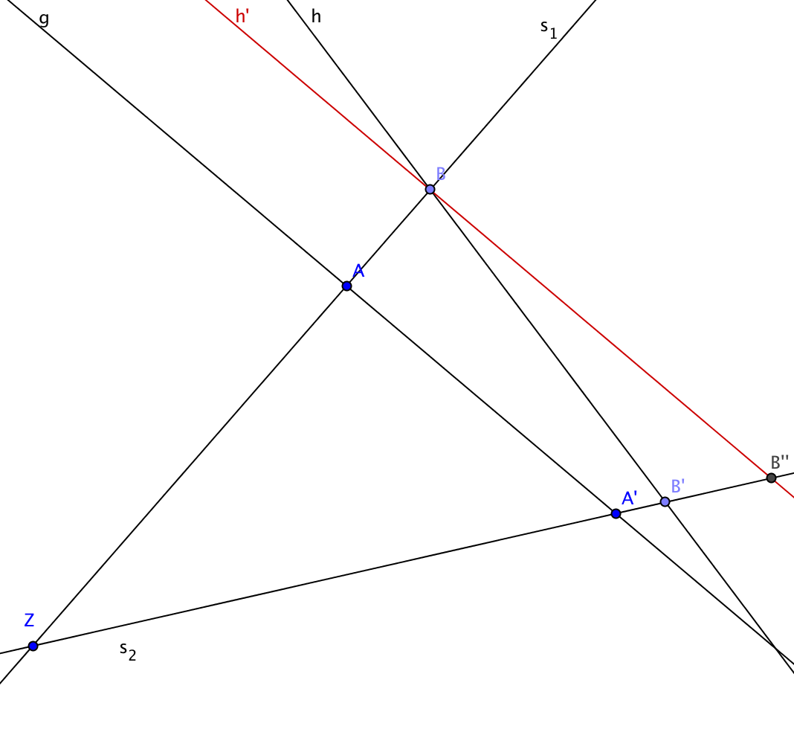
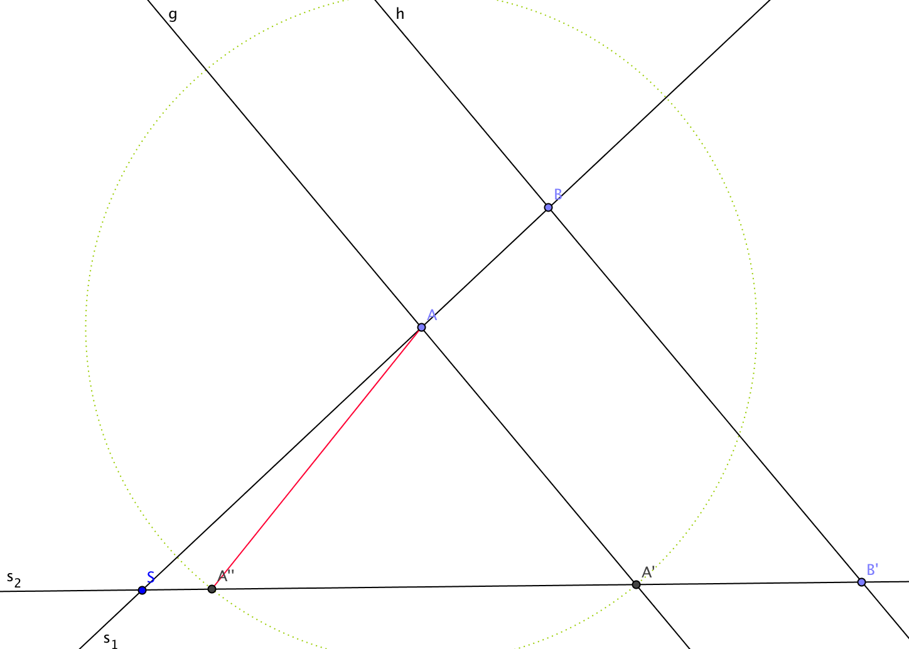

Aufgabe 5.2
Begründen Sie dass
- sich der 1. Strahlensatz umkehren lässt
- die Umkehrung des 2. Strahlensatzes falsch ist.
- Formulieren Sie zunächst präzise die Umkehrungen beider Sätze
- Für den Beweis der Umkehrung: Nutzen Sie einen Widerspruchsbeweis
- Für das Gegenbeispiel: Konstruieren Sie eine Figur mit gleichen Verhältnissen aber ohne Parallelität
- Skizzieren Sie die Situationen sorgfältig
(a) Umkehrung des 1. Strahlensatzes ist wahr:
1. Strahlensatz: Wenn $g \parallel h$, dann gilt $\frac{\overline{ZA}}{\overline{ZB}} = \frac{\overline{ZA'}}{\overline{ZB'}}$
Umkehrung: Wenn $\frac{\overline{ZA}}{\overline{ZB}} = \frac{\overline{ZA'}}{\overline{ZB'}}$, dann gilt $g \parallel h$
Beweis durch Widerspruch:

Annahme: Die Verhältnisse sind gleich, aber $g \not\parallel h$.
Dann existiert eine Gerade $h'$ durch $A'$ mit $h' \parallel g$, die $s_2$ in einem Punkt $B'' \neq B'$ schneidet.
Nach dem 1. Strahlensatz gilt für diese Konfiguration: $$\frac{\overline{ZA}}{\overline{ZB}} = \frac{\overline{ZA'}}{\overline{ZB''}}$$
Da nach Voraussetzung aber auch gilt: $$\frac{\overline{ZA}}{\overline{ZB}} = \frac{\overline{ZA'}}{\overline{ZB'}}$$
folgt: $\overline{ZB'} = \overline{ZB''}$
Da $B'$ und $B''$ auf demselben Strahl liegen und denselben Abstand zu $Z$ haben, müssen sie identisch sein: $B' = B''$.
Damit ist $h = h'$ und somit $g \parallel h$.
(b) Umkehrung des 2. Strahlensatzes ist falsch:
2. Strahlensatz: Wenn $g \parallel h$, dann gilt $\frac{\overline{SA}}{\overline{SB}} = \frac{\overline{AA'}}{\overline{BB'}}$
Umkehrung: Wenn $\frac{\overline{SA}}{\overline{SB}} = \frac{\overline{AA'}}{\overline{BB'}}$, dann gilt $g \parallel h$ (FALSCH!)
Gegenbeispiel:

Die Konstruktion zeigt zwei verschiedene Konfigurationen mit gleichen Verhältnissen:
- $\frac{\overline{SA}}{\overline{SB}} = \frac{\overline{AA'}}{\overline{BB'}} = \frac{\overline{AA''}}{\overline{BB''}}$
- Aber: $A'$ und $A''$ liegen auf verschiedenen Geraden durch $A$
Die Verhältnisse bestimmen die Konfiguration nicht eindeutig, daher kann aus gleichen Verhältnissen nicht auf Parallelität geschlossen werden.
Im Video: Etappe 7 · Strahlensätze bei 4:01